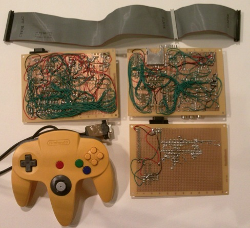

A weblog focused on interesting circuits, ideas, schematics and other information about microelectronics and microcontrollers.
E-books
Disclaimer
Because I have not tested all electronic circuits mentioned on this pages, I cannot attest to their accuracy; therefore, I do not provide a warranty of any kind and cannot be held responsible in any manner.
Atmel
ARM7 game console
28. May 2010 - 18:25 — adminHow to build game console based on ARM7 chip?

Image: Craig J. Bishop
Microcontrollers gotchas
5. April 2009 - 14:59 — adminA list of AVR and PIC common pitfalls by Ladyada.
PS/2 keyboard data logger
26. August 2008 - 11:04 — adminKeeLog has decided to release an early version of it's hardware keylogger family to the public domain, including full firmware & software source code, keylogger hardware electrical schematics, and documentation.
PFAVR - FORTH for AVR microcontroller
8. August 2008 - 13:39 — adminPFAVR is a 16-bit implementation of the Forth programming language for Atmel AVR microcontrollers. 13Kwords of FLASH and 32Kbytes of external RAM are required, thus the ATmega64 and ATmega128 are really the only devices supported as of this writing.
SquidBee
21. July 2008 - 21:56 — adminSquidBee is an Open Hardware and Source wireless sensor device based on Arduino and XBee module.
AVR-MIDI - an USB MIDI-class compliant device
5. July 2008 - 20:04 — adminThis is an inexpensive DIY MIDI controller device for USB. It consists of a simple AVR ATMega16 with driver software from Objective Development (see).
AVR-MT development board for 20pin AVR
15. June 2008 - 13:18 — adminDevelopment board for 20pin AVR microcontrollers with STKxxx-compatible ICSP (10 pins) PLUS simple handy password generator.
Flickr images on a Nokia 6110 Color LCD
14. June 2008 - 14:01 — adminMost used are these green character displays with two or more rows to display menus, status or debug messages. With mass production of mobile phones, color LCDs get that cheap, that they can be used as replacement. To test the display, I hacked a kind of small digital picture frame, that fetches pictures from Flickr.
Microcontroller board with Ethernet, MMC/SD card interface and USB
27. May 2008 - 13:12 — adminThis project is a basis for developing microcontroller applications connected to an ethernet network.